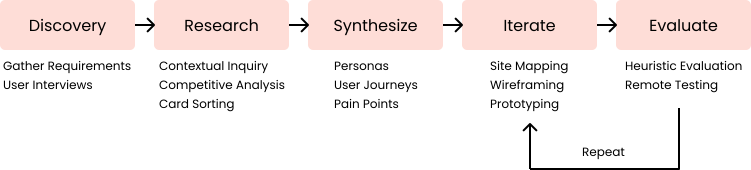

Overview
- Christy W - Product Owner
- Kenzie K - Product Manager
- Myself - UX/UI Designer
- Jade W - Front End Developer
- Neil W - Back End Developer
- Karl K - Infrastructure
- Jira
- Figma
- Invision
- Google Suite
- Extremely limited budget
- Remote access to users only (COVID)
- Users with visual and cognitive impairments
- Brought the project out of standstill by bridging communication between stakeholders, users, and development team
- Drastically reduced time needed for breeder members to research breeding pairs
Background
Wagtrax is a start up conceived of by the owner of the currently existing Breederzoo, a program that helps
breeders manage their kennel and all associated records. After several conversations with clients of hers
who were also board members of breeding clubs, she sought to create an equivalent software for those clubs
with the possibility of merging the two in the future.
Dog Breeding Clubs, such as the AKC, are non-profit organizations that set and enforce ethical breeding
standards for certain breeds. Each club can have upwards of thousands of Breeder Members, who join primarily
to 1) receive certification proving their quality to customers and 2) gain access to the club’s database of
animals, breeders, pedigrees, and health testing. This information is vital in ensuring that the dams and studs
breeders pair make a genetically healthy match. In addition, clubs also have Pet Members, who join with the
goal of finding breeders and puppies adhere to a standard they agree with.
The Problem
Dog breeding clubs currently lack an affordable and efficient way to manage and display their members’ registered
dogs and associated records, so that breeder members can effectively research each stud and dam within their
database for genetic compatibility.
Our goals
Our primary goal was to at minimum, cut the amount of time required to register and research dogs in the club
databases by half. Currently existing solutions require breeders and board members to spend several hours,
if not days, on these work flows. We decided to focus first on the search function, as it was ultimately at
the core of both of these experiences. Specifically, we sought to cut the time needed for Breeder Members to
research a stud by at least 50%.
My Role
I was brought on as the lead UX/UI designer. My responsibilities included, gathering requirements, user research,
competitive analysis, wireframing, prototyping, user testing, branding, as well as presenting all of these
findings to the development team in meetings that I facilitated.
My design process for this project is outlined below:
